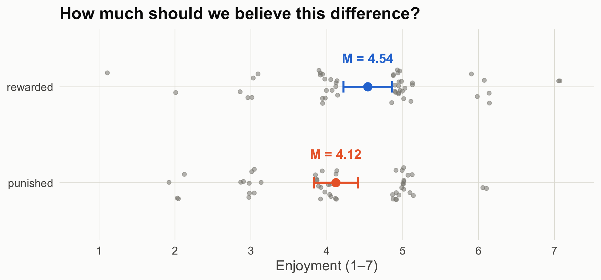

Frequentist and Bayesian inference as tools for theory building in communication
Author
COM 903 · Advanced Research Methods · Michigan State University
Published
September 28, 2026
How to use these pages
These pages follow one simulated research program through two statistical frameworks and asks, at each step, what each framework lets you say and what it needs from you. The data are simulated, so we know the truth and can check which sentences were warranted.
In class (about 25 minutes): Scenes 1, 2, and 5. Scenes 3, 4, and 6 are for after class or for a longer session.
Moving around: each scene is its own page. Use the arrows at the bottom of each page, or the sidebar, to move between them.
Following along in R: open com903-bayes-freq-demo.Rproj in RStudio (or the folder in Positron) and run source("install.R") once. Then open any scene’s file (scene-1.qmd through scene-6.qmd) and run its chunks in order. Each scene loads its own data, so you can start anywhere. Every number and figure is computed live from the files in data/.
No R? Read these pages (in a downloaded copy, open docs/index.html), or load the CSVs in data/ into JASP. The Resources page maps each result to a JASP menu.
Five kinds of boxes appear along the way:
Predict first (red): a pause. Before running the next chunk, write down the number you expect and the sentence you would put in a results section.
How to read this figure: a step-by-step guide under each new kind of figure.
Explainer (click to open): definitions of terms where they first appear.
What each framework lets you say (green): sample results sentences.
Your turn (yellow): exercises for after class.
The running example
A class example from earlier in the semester, made concrete. Participants read a short story in which the main character does a good deed: they find a lost wallet and return it to its owner with the cash untouched. Participants are randomly assigned to one of two endings. In the rewarded ending, the grateful owner gives the character a cash reward. In the punished ending, the owner accuses the character of stealing from the wallet and calls the police. Everyone then rates how much they enjoyed the story, from 1 (not at all) to 7 (very much). The good deed is identical in both versions; only its consequence differs.
Affective disposition theory (ADT) says what should happen (Raney, 2004). Viewers judge what characters do, come to like characters who do good, and want those characters to fare well. Enjoyment depends on whether they do: it rises when a liked character is rewarded and falls when a liked character is punished. Returning a wallet full of cash makes the character easy to like, so ADT predicts:
Ending
What happens
ADT predicts
Good + Rewarded
The character returns the wallet and gets a cash reward.
higher enjoyment
Good + Punished
The character returns the wallet and is accused of stealing.
lower enjoyment
We summarize the effect as a standardized difference, δ = (rewarded − punished) / SD, so ADT predicts δ > 0. Scene 2 adds two rival accounts that predict something else.
Explainer: what is δ?
δ (Greek delta) is the true standardized effect: the difference between the two conditions’ population means, divided by the standard deviation within each condition.
The Greek letter marks an unknown population value. Its estimate from a sample is Cohen’s d; in the n = 50 study, d = 0.39.
Standardizing puts effects measured on different scales on one ruler. It is also the scale on which JASP’s Bayesian t-test, and this notebook, places priors.
In these data the SD is about 1.2 scale points, so δ = 0.30 means enjoyment ratings about 0.36 points higher on the 1–7 scale. Put another way, the average participant in the rewarded condition would report more enjoyment than about 62% of participants in the punished condition.
Cohen’s rough labels (0.2 “small,” 0.5 “medium,” 0.8 “large”) are common, but they are no substitute for deciding what size of effect matters for your question. Scene 3 returns to this.
Keep the course’s chain in view: Explanation → Prediction → Design & data generation → Analysis → Inference. Today lives in the last two links, but Scene 5 shows why the middle link decides what the last one can mean.
The data
All files are in data/. R/simulate_data.R documents every data-generating process and rebuilds Studies 2–4; the three Study 1 files were generated earlier from the same process and are kept verbatim so the numbers match the course notes. As with most classroom examples, random seeds were chosen so each dataset illustrates its point cleanly. Change a seed and rerun to see how much a single study bounces around.
File
Study
Design
Truth
story_n15.csv, story_n50.csv, story_n150.csv
1
Randomized, 15 / 50 / 150 per group
δ = 0.30
story_neutral_n200.csv
2
Randomized, but the character’s action is morally neutral; 200 per group
plot_groups <-function(d, title) { sm <-aggregate(enjoyment ~ condition, d, function(x)c(m =mean(x), lo =mean(x) -qt(.975, length(x) -1) *sd(x) /sqrt(length(x)),hi =mean(x) +qt(.975, length(x) -1) *sd(x) /sqrt(length(x)))) sm <-data.frame(condition = sm$condition, sm$enjoyment) d$condition <-factor(d$condition, levels =c("punished", "rewarded")) sm$condition <-factor(sm$condition, levels =c("punished", "rewarded"))set.seed(1)ggplot(d, aes(condition, enjoyment)) +geom_jitter(width =0.18, height =0.15, color = pal[["gray"]], alpha =0.55, size =1.8) +geom_errorbar(data = sm, aes(y = m, ymin = lo, ymax = hi, color = condition),width =0.12, linewidth =1) +geom_point(data = sm, aes(y = m, color = condition), size =4) +geom_text(data = sm, aes(y = m, label =sprintf("M = %.2f", m), color = condition),nudge_x =0.3, size =5, fontface ="bold") +scale_color_manual(values =c(punished = pal[["orange"]], rewarded = pal[["blue"]])) +scale_y_continuous(breaks =1:7, limits =c(0.8, 7.2)) +labs(x =NULL, y ="Enjoyment (1–7)", title = title) +coord_flip() +theme_demo()}plot_groups(s1_50, "How much should we believe this difference?")

Figure 1: Study 1, n = 50 per group. Each dot is one participant (jittered); bars are group means with 95% confidence intervals.
Source Code
---title: "One Story, Two Inference Machines"subtitle: "Frequentist and Bayesian inference as tools for theory building in communication"author: "COM 903 · Advanced Research Methods · Michigan State University"date: "2026-09-28"---```{r}#| label: setup#| include: falsesource("R/helpers.R")suppressPackageStartupMessages({library(BayesFactor)library(patchwork)})knitr::opts_chunk$set(fig.align ="center")```## How to use these pagesThese pages follow one simulated research program through two statistical frameworks and asks, at each step, **what each framework lets you say** and **what it needs from you**. The data are simulated, so we know the truth and can check which sentences were warranted.- **In class (about 25 minutes):** Scenes [1](scene-1.qmd), [2](scene-2.qmd), and [5](scene-5.qmd). Scenes 3, 4, and 6 are for after class or for a longer session.- **Moving around:** each scene is its own page. Use the arrows at the bottom of each page, or the sidebar, to move between them.- **Following along in R:** open `com903-bayes-freq-demo.Rproj` in RStudio (or the folder in Positron) and run `source("install.R")` once. Then open any scene's file (`scene-1.qmd` through `scene-6.qmd`) and run its chunks in order. Each scene loads its own data, so you can start anywhere. Every number and figure is computed live from the files in `data/`.- **No R?** Read these pages (in a downloaded copy, open `docs/index.html`), or load the CSVs in `data/` into [JASP](https://jasp-stats.org/). The [Resources](resources.qmd) page maps each result to a JASP menu.Five kinds of boxes appear along the way:- **Predict first** (red): a pause. Before running the next chunk, write down the number you expect and the sentence you would put in a results section.- **How to read this figure:** a step-by-step guide under each new kind of figure.- **Explainer** (click to open): definitions of terms where they first appear.- **What each framework lets you say** (green): sample results sentences.- **Your turn** (yellow): exercises for after class.## The running exampleA class example from earlier in the semester, made concrete. Participants read a short story in which the main character does a good deed: they find a lost wallet and return it to its owner with the cash untouched. Participants are randomly assigned to one of two endings. In the **rewarded** ending, the grateful owner gives the character a cash reward. In the **punished** ending, the owner accuses the character of stealing from the wallet and calls the police. Everyone then rates how much they **enjoyed the story**, from 1 (not at all) to 7 (very much). The good deed is identical in both versions; only its consequence differs.**Affective disposition theory (ADT)** says what should happen (Raney, 2004). Viewers judge what characters do, come to like characters who do good, and want those characters to fare well. Enjoyment depends on whether they do: it rises when a liked character is rewarded and falls when a liked character is punished. Returning a wallet full of cash makes the character easy to like, so ADT predicts:| Ending | What happens | ADT predicts ||---|---|---|| **Good + Rewarded** | The character returns the wallet and gets a cash reward. | higher enjoyment || **Good + Punished** | The character returns the wallet and is accused of stealing. | lower enjoyment |We summarize the effect as a standardized difference, δ = (rewarded − punished) / SD, so ADT predicts δ > 0. [Scene 2](scene-2.qmd) adds two rival accounts that predict something else.::: {.callout-note title="Explainer: what is δ?"}**δ** (Greek *delta*) is the **true standardized effect**: the difference between the two conditions' population means, divided by the standard deviation within each condition. δ = (true mean, rewarded − true mean, punished) ÷ within-group SD- The Greek letter marks an unknown population value. Its estimate from a sample is **Cohen's *d***; in the n = 50 study, *d* = 0.39.- Standardizing puts effects measured on different scales on one ruler. It is also the scale on which JASP's Bayesian *t*-test, and this notebook, places priors.- In these data the SD is about 1.2 scale points, so δ = 0.30 means enjoyment ratings about 0.36 points higher on the 1–7 scale. Put another way, the average participant in the rewarded condition would report more enjoyment than about 62% of participants in the punished condition.- Cohen's rough labels (0.2 "small," 0.5 "medium," 0.8 "large") are common, but they are no substitute for deciding what size of effect matters for your question. [Scene 3](scene-3.qmd) returns to this.:::Keep the course's chain in view: **Explanation → Prediction → Design & data generation → Analysis → Inference.** Today lives in the last two links, but [Scene 5](scene-5.qmd) shows why the middle link decides what the last one can mean.### The dataAll files are in `data/`. `R/simulate_data.R` documents every data-generating process and rebuilds Studies 2–4; the three Study 1 files were generated earlier from the same process and are kept verbatim so the numbers match the course notes. As with most classroom examples, random seeds were chosen so each dataset illustrates its point cleanly. Change a seed and rerun to see how much a single study bounces around.| File | Study | Design | Truth ||---|---|---|---|| `story_n15.csv`, `story_n50.csv`, `story_n150.csv` | 1 | Randomized, 15 / 50 / 150 per group | δ = 0.30 || `story_neutral_n200.csv` | 2 | Randomized, but the character's action is morally neutral; 200 per group | δ = 0 || `story_labs.csv` | 3 | Six labs run Study 1 (lab 1 = the n = 50 file) | δ = 0.30 || `story_observational.csv` | 4 | Viewers choose their episode; 600 viewers | causal effect 0.36 points |```{r}#| label: loads1_15 <-read.csv("data/story_n15.csv")s1_50 <-read.csv("data/story_n50.csv")s1_150 <-read.csv("data/story_n150.csv")head(s1_50)``````{r}#| label: fig-raw#| code-fold: true#| fig-height: 4.2#| fig-cap: "Study 1, n = 50 per group. Each dot is one participant (jittered); bars are group means with 95% confidence intervals."plot_groups <-function(d, title) { sm <-aggregate(enjoyment ~ condition, d, function(x)c(m =mean(x), lo =mean(x) -qt(.975, length(x) -1) *sd(x) /sqrt(length(x)),hi =mean(x) +qt(.975, length(x) -1) *sd(x) /sqrt(length(x)))) sm <-data.frame(condition = sm$condition, sm$enjoyment) d$condition <-factor(d$condition, levels =c("punished", "rewarded")) sm$condition <-factor(sm$condition, levels =c("punished", "rewarded"))set.seed(1)ggplot(d, aes(condition, enjoyment)) +geom_jitter(width =0.18, height =0.15, color = pal[["gray"]], alpha =0.55, size =1.8) +geom_errorbar(data = sm, aes(y = m, ymin = lo, ymax = hi, color = condition),width =0.12, linewidth =1) +geom_point(data = sm, aes(y = m, color = condition), size =4) +geom_text(data = sm, aes(y = m, label =sprintf("M = %.2f", m), color = condition),nudge_x =0.3, size =5, fontface ="bold") +scale_color_manual(values =c(punished = pal[["orange"]], rewarded = pal[["blue"]])) +scale_y_continuous(breaks =1:7, limits =c(0.8, 7.2)) +labs(x =NULL, y ="Enjoyment (1–7)", title = title) +coord_flip() +theme_demo()}plot_groups(s1_50, "How much should we believe this difference?")```